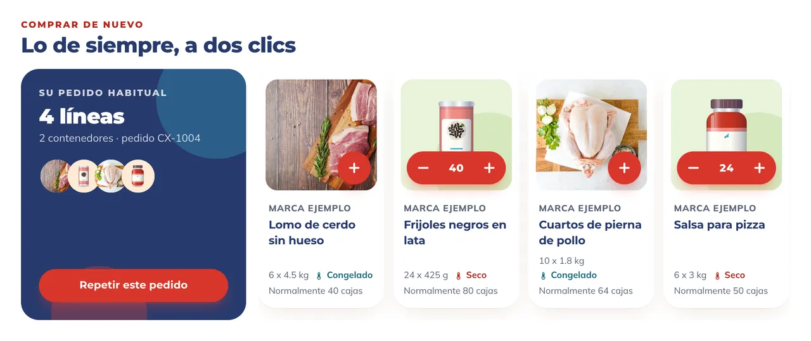
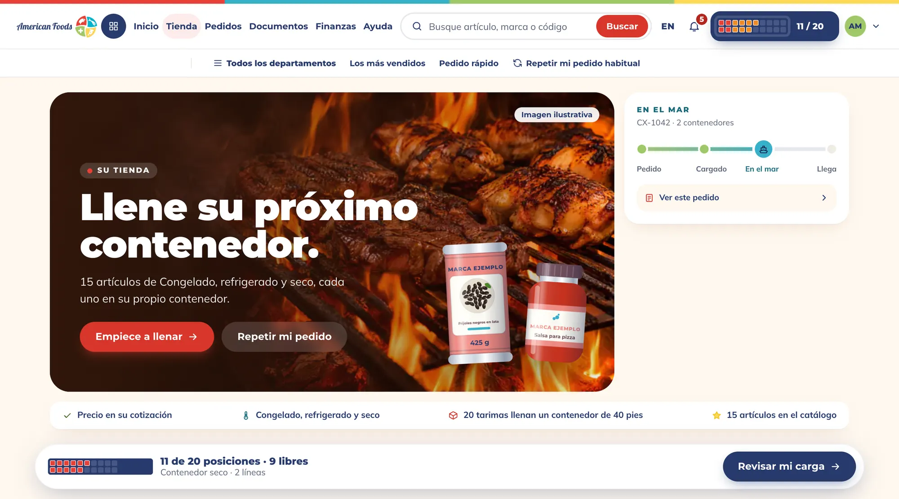
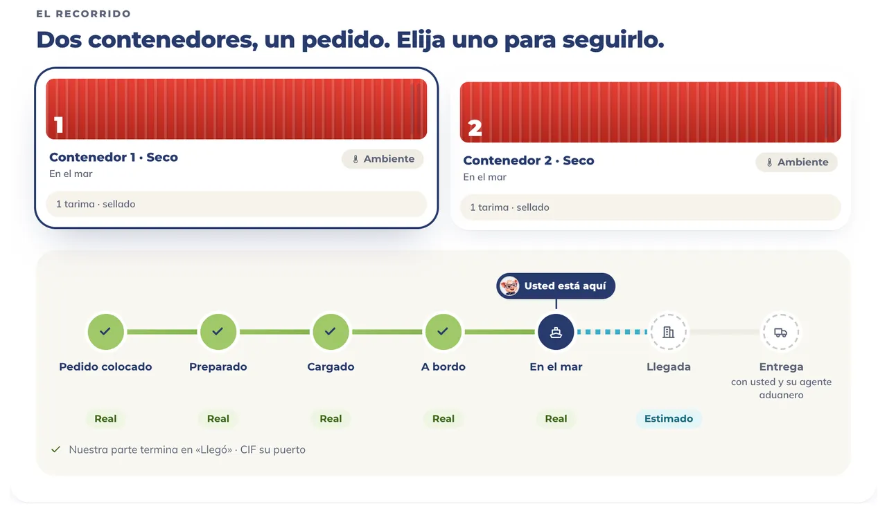
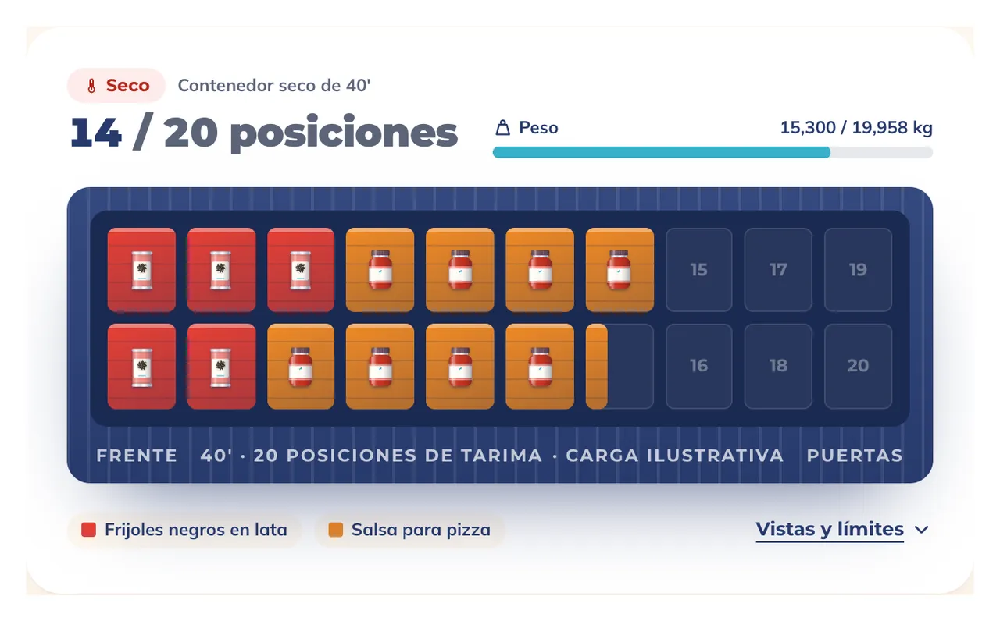
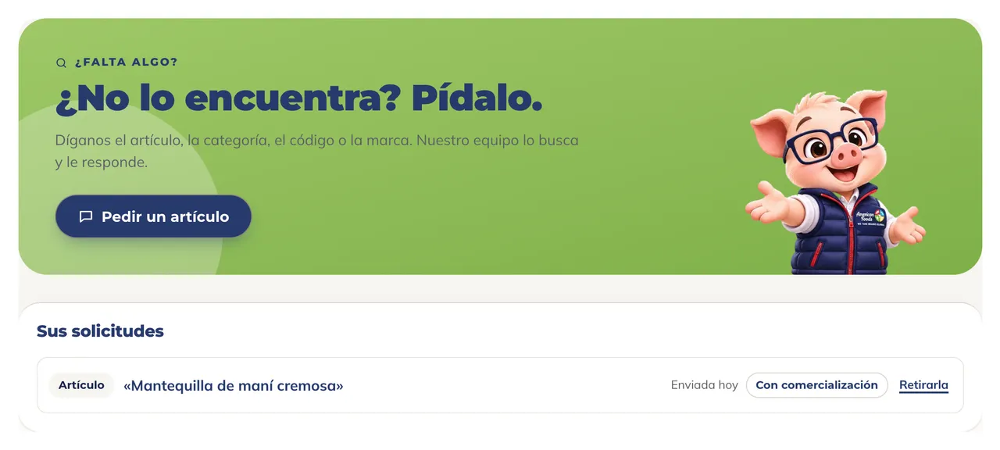
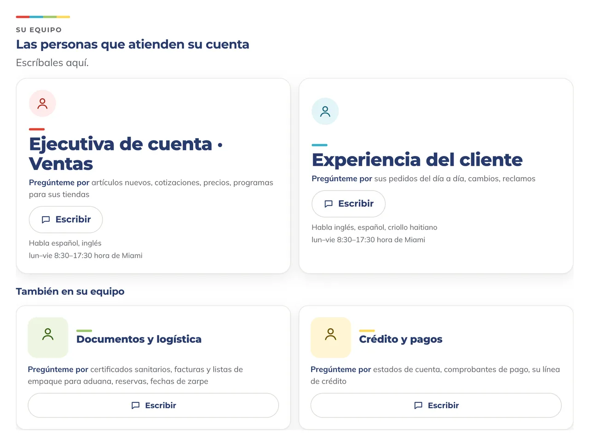
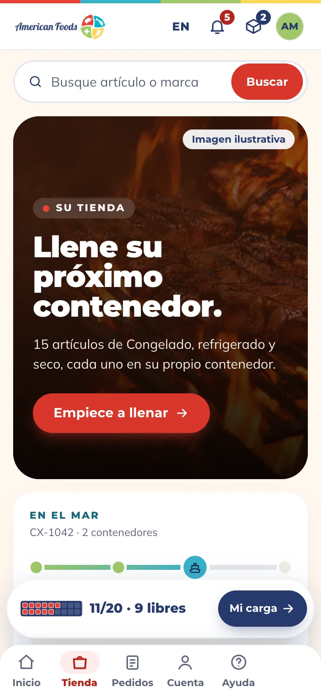
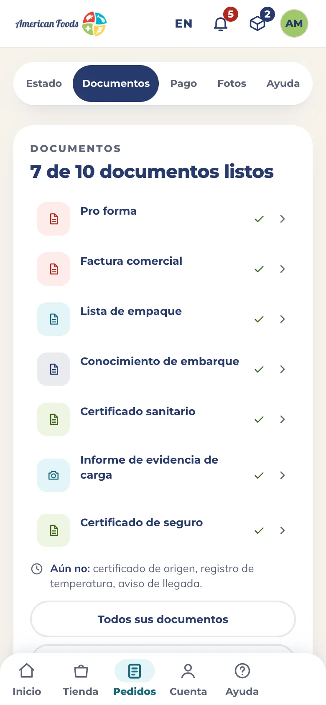

Tu pedido habitual
Repite tu pedido habitual en dos clics.
Empieza con tu pedido habitual y cambia solo lo que sea distinto esta vez.

El portal de American Foods reúne el catálogo, tu carga, tus pedidos y tus documentos en un solo lugar, en inglés y en español, en la computadora o en el celular. Las cadenas y distribuidores lo usan para pedir ami y el resto del portafolio de American Foods.

Recorre los pasillos o busca por artículo, marca o código, incluido ami. Cada tarima que agregas ocupa su lugar en el contenedor, y ves cuántas posiciones quedan libres.
Empieza con tu pedido habitual y cambia solo lo que sea distinto esta vez.

Mira cada contenedor etapa por etapa: preparado, cargado, a bordo, en el mar y en destino.

Agrega productos y mira cuántas posiciones quedan libres antes de confirmar la carga.

Dinos el artículo, la categoría, el código o la marca. Nuestro equipo lo busca y te responde, y tu solicitud queda en tu lista.

Mira quién atiende tu cuenta por función: ventas, experiencia del cliente, documentos y logística, crédito y pagos.

Abre el portal en el navegador de tu celular: la misma tienda, la misma carga y los mismos pedidos y documentos, con las fotos de carga en la página de cada pedido.
Datos de ejemplo

Panchito es el asistente del portal. Pregúntale desde cualquier página.
Cuéntanos sobre tu negocio. Si ya le compras a American Foods, pasa al paso dos.
El acceso se habilita cliente por cliente, para las personas de tu equipo que lo necesitan.
Un solo ingreso para ambos sitios, en la computadora o en el celular, en inglés o en español.
Ingresa una sola vez con tu correo de trabajo. Es la misma cuenta de American Foods en amianytime.com y afoodsinc.com.